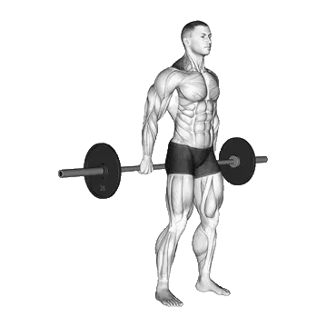

Behind-The-Back Barbell Shrug
Behind-The-Back Barbell Shrug mostra carga média e padrões de força como referência para costas. Músculos principais: Trapézio.

Carga média: Intermediário
Referência para uma pessoa de nível intermediário.
Homens
290 lb
Mulheres
146 lb
Carga média de Behind-The-Back Barbell Shrug [1RM]
| Nível | ||
|---|---|---|
| Iniciante | 103 lb | 34 lb |
| Novato | 182 lb | 79 lb |
| Intermediário | 290 lb | 146 lb |
| Avançado | 422 lb | 233 lb |
| Elite | 572 lb | 335 lb |
Nota: estes padrões são estimativas de 1RM baseadas em atletas médios. Peso corporal, idade e outros fatores pessoais podem afetar os valores. Veja as tabelas detalhadas abaixo.
Padrões de força de Behind-The-Back Barbell Shrug (lb)
Homens por peso corporal (lb) [1RM]
| Peso corporal | Iniciante | Novato | Intermediário | Avançado | Elite |
|---|---|---|---|---|---|
| 110 | 38 | 84 | 151 | 239 | 341 |
| 120 | 49 | 100 | 173 | 266 | 373 |
| 130 | 60 | 116 | 194 | 292 | 404 |
| 140 | 72 | 133 | 215 | 317 | 434 |
| 150 | 84 | 149 | 235 | 342 | 462 |
| 160 | 96 | 164 | 255 | 366 | 490 |
| 170 | 108 | 180 | 275 | 389 | 517 |
| 180 | 120 | 195 | 293 | 411 | 542 |
| 190 | 132 | 211 | 312 | 433 | 567 |
| 200 | 144 | 225 | 330 | 454 | 592 |
| 210 | 156 | 240 | 348 | 475 | 615 |
| 220 | 167 | 254 | 365 | 495 | 638 |
| 230 | 179 | 268 | 382 | 515 | 660 |
| 240 | 190 | 282 | 398 | 534 | 682 |
| 250 | 202 | 296 | 414 | 553 | 703 |
| 260 | 213 | 309 | 430 | 571 | 724 |
| 270 | 224 | 323 | 446 | 589 | 744 |
| 280 | 234 | 335 | 461 | 606 | 763 |
| 290 | 245 | 348 | 476 | 623 | 782 |
| 300 | 256 | 361 | 490 | 640 | 801 |
| 310 | 266 | 373 | 505 | 656 | 819 |
Homens por idade [1RM]
| Idade | Iniciante | Novato | Intermediário | Avançado | Elite |
|---|---|---|---|---|---|
| 15 | 88 | 155 | 247 | 360 | 487 |
| 20 | 100 | 178 | 283 | 412 | 557 |
| 25 | 103 | 182 | 290 | 422 | 572 |
| 30 | 103 | 182 | 290 | 422 | 572 |
| 35 | 103 | 182 | 290 | 422 | 572 |
| 40 | 103 | 182 | 290 | 422 | 572 |
| 45 | 98 | 173 | 275 | 401 | 543 |
| 50 | 92 | 162 | 258 | 376 | 509 |
| 55 | 85 | 150 | 239 | 348 | 471 |
| 60 | 77 | 137 | 218 | 318 | 430 |
| 65 | 70 | 124 | 197 | 287 | 388 |
| 70 | 63 | 111 | 177 | 257 | 349 |
| 75 | 56 | 99 | 158 | 230 | 312 |
| 80 | 50 | 89 | 141 | 206 | 279 |
| 85 | 45 | 80 | 127 | 185 | 250 |
| 90 | 41 | 72 | 114 | 166 | 225 |
Mulheres por peso corporal (lb) [1RM]
| Peso corporal | Iniciante | Novato | Intermediário | Avançado | Elite |
|---|---|---|---|---|---|
| 90 | 13 | 43 | 92 | 160 | 243 |
| 100 | 18 | 50 | 103 | 174 | 260 |
| 110 | 22 | 58 | 113 | 187 | 276 |
| 120 | 26 | 64 | 123 | 200 | 290 |
| 130 | 31 | 71 | 132 | 211 | 305 |
| 140 | 35 | 78 | 141 | 223 | 318 |
| 150 | 39 | 84 | 149 | 233 | 331 |
| 160 | 43 | 90 | 157 | 243 | 343 |
| 170 | 48 | 96 | 165 | 253 | 354 |
| 180 | 52 | 102 | 173 | 262 | 365 |
| 190 | 56 | 108 | 180 | 271 | 376 |
| 200 | 60 | 113 | 187 | 280 | 386 |
| 210 | 64 | 118 | 194 | 288 | 396 |
| 220 | 67 | 124 | 201 | 297 | 405 |
| 230 | 71 | 129 | 207 | 304 | 415 |
| 240 | 75 | 134 | 214 | 312 | 423 |
| 250 | 78 | 139 | 220 | 319 | 432 |
| 260 | 82 | 143 | 226 | 327 | 440 |
Mulheres por idade [1RM]
| Idade | Iniciante | Novato | Intermediário | Avançado | Elite |
|---|---|---|---|---|---|
| 15 | 29 | 67 | 124 | 198 | 285 |
| 20 | 33 | 77 | 142 | 227 | 326 |
| 25 | 34 | 79 | 146 | 233 | 335 |
| 30 | 34 | 79 | 146 | 233 | 335 |
| 35 | 34 | 79 | 146 | 233 | 335 |
| 40 | 34 | 79 | 146 | 233 | 335 |
| 45 | 32 | 75 | 138 | 221 | 318 |
| 50 | 30 | 70 | 130 | 207 | 298 |
| 55 | 28 | 65 | 120 | 192 | 276 |
| 60 | 26 | 59 | 110 | 175 | 252 |
| 65 | 23 | 54 | 99 | 158 | 228 |
| 70 | 21 | 48 | 89 | 142 | 204 |
| 75 | 19 | 43 | 79 | 127 | 183 |
| 80 | 17 | 39 | 71 | 114 | 163 |
| 85 | 15 | 35 | 64 | 102 | 146 |
| 90 | 13 | 31 | 57 | 92 | 132 |
Nota: uma barra padrão de academia geralmente pesa 44 lb.
Registre e analise no app Shiba
Revise carga, repetições e progresso em um só lugar.
Como ler a tabela
| Nível | Descrição | Distribuição |
|---|---|---|
| Iniciante | Aprendeu a forma correta e treinou consistentemente por pelo menos 1 mês. | Base 5% |
| Novato | Treinou consistentemente por pelo menos 6 meses. | Top 80% |
| Intermediário | Treinou consistentemente por pelo menos 2 anos. | Top 50% |
| Avançado | Treinou consistentemente por mais de 5 anos. | Top 20% |
| Elite | Treinou especificamente este exercício por mais de 5 anos. | Top 5% |
Outros exercícios
Costas
Reverse Hyperextension
Costas
Deadlift
Costas / BIG3
Pull-Up
Costas / Peso corporal
Bent-Over Row
Costas
Lat Pulldown
Costas
Chin Up
Costas / Peso corporal
Dumbbell Row
Costas / Halteres
Seated Cable Row
Costas / Cabo
Barbell Shrug
Costas / Barra
T-Bar Row
Costas
Dumbbell Shrug
Costas / Halteres
Pendlay Row
Costas